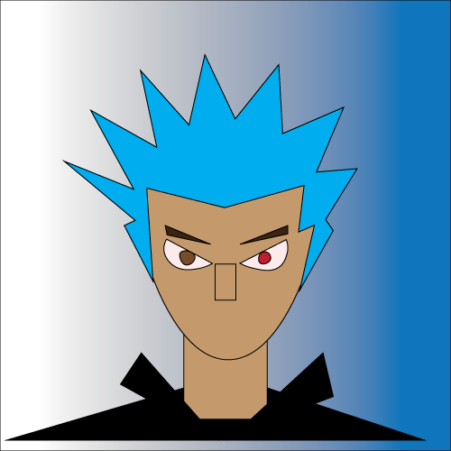

When Dice was 8 years old he was expiremented on by scientist who gave inhanced strenghth, speed, agility, and durability. However they wiped his memory in the process. He was trained by a wise old mentor in how to use his powers, A mysterios man named Kyo Tonaga. Both of them look into the trigon corporation. The people who expiremented on him, to try to find out more about who he is and where he comes from. he learns that the company not only creates mutants, but also sentient maechinary, ROBOTS!. after finding out that his father was a superhero from the 21 century. He winds up travelling back in tme in order to save him from evil time traveling mutants and robots. he learns just a little bit more about who he is. After this enconter Dice decides to spend the rest of his life traveling through time, righting other peoples wrongs, durring his travels he descovers that their is another man just like him who is a living time paradox, who only lives for chaos. Now dice must chase him through time in order to stop him from getting the 2 most powerful weapons in the universe. THE KILL SWITCH, and THE DEATH TRIGGER...
 Home